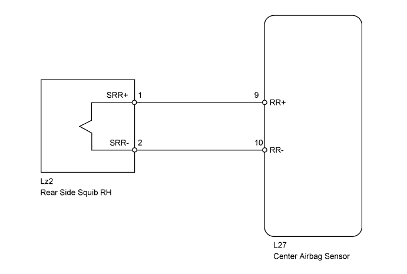
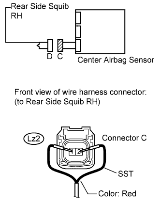
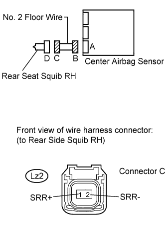
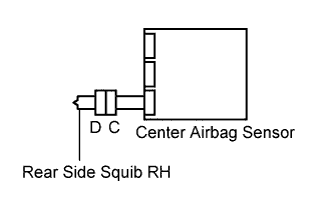

DTC B1850/62 Short in Rear Side Squib RH Circuit |
DTC B1851/62 Open in Rear Side Squib RH Circuit |
DTC B1852/62 Short to GND in Rear Side Squib RH Circuit |
DTC B1853/62 Short to B+ in Rear Side Squib RH Circuit |
| DTC Code | DTC Detection Condition | Trouble Area |
| B1850/62 | When one of the following conditions is met:
|
|
| B1851/62 | When one of the following conditions is met:
|
|
| B1852/62 | When one of the following conditions is met:
|
|
| B1853/62 | When one of the following conditions is met:
|
|

| 1.CHECK REAR SEAT SIDE AIRBAG RH (REAR SIDE SQUIB RH) |
 |
Turn the engine switch off.
Disconnect the cable from the negative (-) battery terminal, and wait for at least 90 seconds.
Disconnect the connector from the rear seat side airbag RH.
Connect the red wire side of SST (resistance: 2.1 Ω) to connector C.
Connect the cable to the negative (-) battery terminal, and wait for at least 2 seconds.
Turn the engine switch on (IG), and wait for at least 60 seconds.
Clear the DTCs (Click here).
Turn the engine switch off.
Turn the engine switch on (IG), and wait for at least 60 seconds.
Check for DTCs (Click here).
| Result | Proceed to |
| OK (for LHD) | A |
| OK (for RHD) | B |
| NG | C |
|
| ||||
|
| ||||
| A | ||
| ||
| 2.CHECK NO. 2 FLOOR WIRE (REAR SIDE SQUIB RH CIRCUIT) |
 |
Turn the engine switch off.
Disconnect the cable from the negative (-) battery terminal, and wait for at least 90 seconds.
Disconnect SST (resistance: 2.1 Ω) from connector C.
Disconnect the connectors from the center airbag sensor.
Connect the cable to the negative (-) battery terminal, and wait for at least 2 seconds.
Measure the voltage according to the value(s) in the table below.
| Tester Connection | Switch Condition | Specified Condition |
| Lz2-1 (SRR+) - Body ground | Engine switch on (IG) | Below 1 V |
| Lz2-2 (SRR-) - Body ground | Engine switch on (IG) | Below 1 V |
Turn the engine switch off.
Disconnect the cable from the negative (-) battery terminal, and wait for at least 90 seconds.
Measure the resistance according to the value(s) in the table below.
| Tester Connection | Condition | Specified Condition |
| Lz2-1 (SRR+) - Lz2-2 (SRR-) | Always | Below 1 Ω |
Release the activation prevention mechanism built into connector B (Click here).
Measure the resistance according to the value(s) in the table below.
| Tester Connection | Condition | Specified Condition |
| Lz2-1 (SRR+) - Lz2-2 (SRR-) | Always | 1 MΩ or higher |
| Lz2-1 (SRR+) - Body ground | Always | 1 MΩ or higher |
| Lz2-2 (SRR-) - Body ground | Always | 1 MΩ or higher |
|
| ||||
| OK | |
| 3.CHECK CENTER AIRBAG SENSOR |
 |
Connect the connectors to the rear seat side airbag RH and the center airbag sensor.
Connect the cable to the negative (-) battery terminal, and wait for at least 2 seconds.
Turn the engine switch on (IG), and wait for at least 60 seconds.
Clear the DTCs (Click here).
Turn the engine switch off.
Turn the engine switch on (IG), and wait for at least 60 seconds.
Check for DTCs (Click here).
|
| ||||
| OK | ||
| ||